01 Teach : Team Activity
Java Hello World
Objectives
Install the JDK and the IntelliJ IDE.
Configure your system to find the Java JDK.
Write a simple Java Hello World program.
Assignment
Part I: Install and Configure the Java JDK
Before continuing, you should have completed this week's preparation assignment.
First, we need to install the Java SDK and configure your system to use it. Please follow the instructions in the video that corresponds to your operating system.
Windows 10
Windows 8/8.1
macOS
Once you have the JDK successfully installed, move on to Part II.
Part II: Install the IntelliJ IDE
While we could now write and compile Java code on the command line, most modern software developers use IDEs (Integrated Development Environments) for these tasks.
There are several Java IDEs available. We'll be using the IntelliJ IDE because it will allow us to create regular Java and Android projects.
To begin, download and install the free, Community edition of IntelliJ.
Part III: Write a Java Hello World program
With your system configured, you're ready to write your first Java program. Here are the guidelines to follow:
If you haven't already, make sure you review the Course Style Guide to see how Java code should be styled for this course.
-
Launch IntelliJ and select "Create a New Project".
Select "Java" from the project types on the left-side of the window, make sure the Java SDK version you downloaded is selected at the top, and then click "Next".
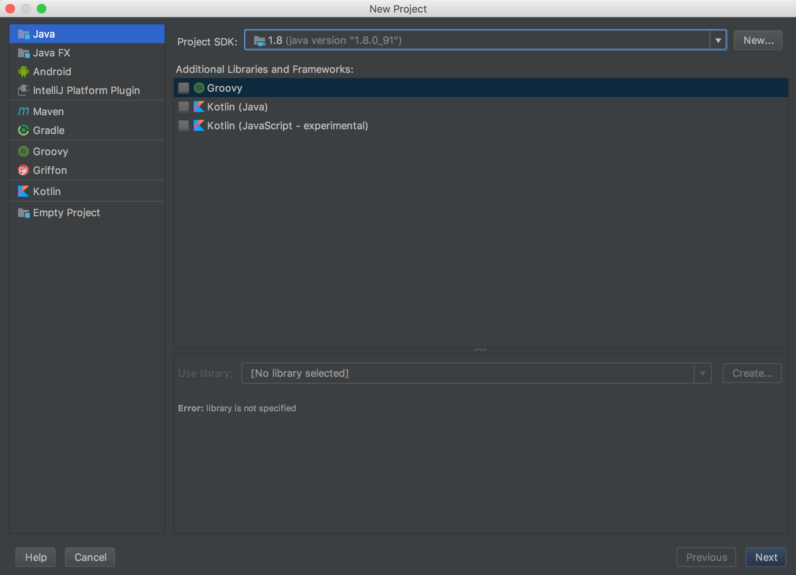 -
Check the "Create project from template box", select "Command Line App" from the template list, and click "Next".
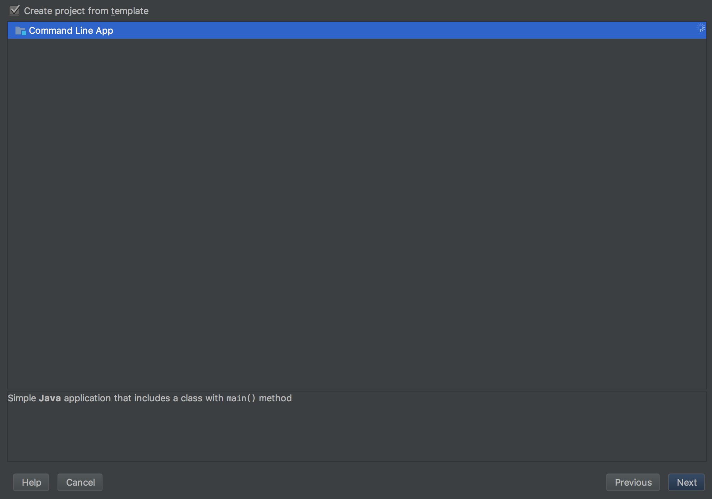 -
Fill in the project settings. What you enter here isn't too critical, but a good guideline is to name your projects after the assignment number (e.g. this one would be "teach-01").
You can set your base package name to either be your last name or the name of the project without spaces (e.g. "HelloWorld").
Once you've entered the values, click "Next".
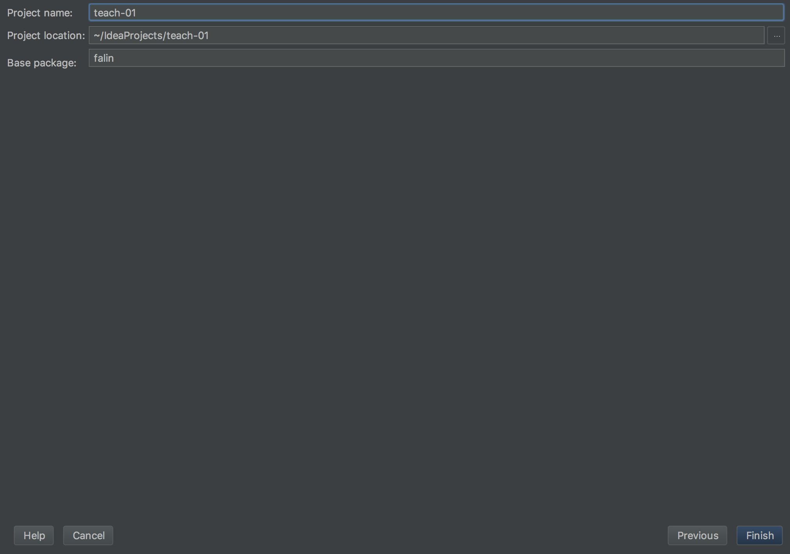 -
Wait a few moments while the project loads, and if everything went well, you should see a new project loaded with a class called
Mainthat is pre-populated with themain()method. -
Find the line that says:
public class Main {. Rename the class toHelloWorldAfter you do so, you should see a red, squiggly line appear under the class definition. This line indicates there is an error in the code. Hover your mouse over the line to see the error.
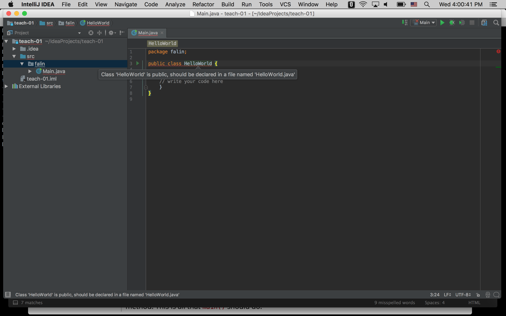 -
In this case, the error is warning us that a public class must be defined in a file with the same name.
Click anywhere on the line where the red squiggle appears and press
Alt+Enter(orOption+Enteron OX X).A list of possible solutions to this error appear. Select the action that says "Rename File". The file will be renamed to HelloWorld.java, and the error indicator should disappear.
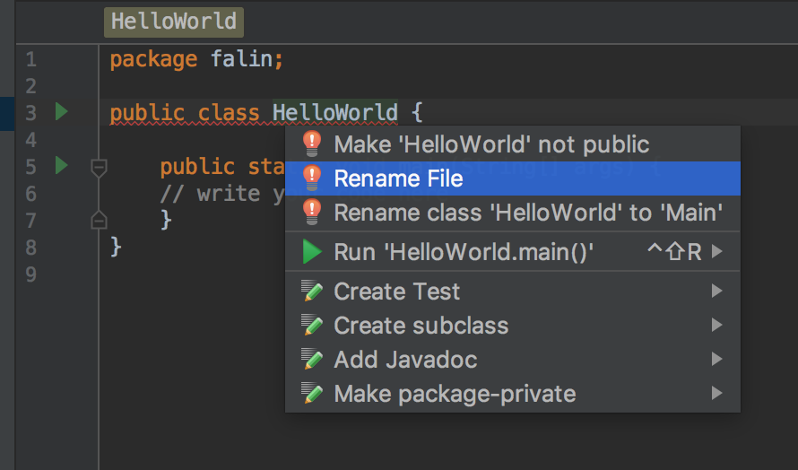This same pattern (hover over squiggly line to see error then click on line and press
Alt+Enterto see possible fixes) can often be used in IntelliJ for resolving common problems. -
Add another method to the the HelloWorld class called
sayHello(). This method should print "Hello World" to the console. -
Have
main()create a new instance of the HelloWorld class and call itssayHello()method. This is all thatmain()should do. -
Try to compile and execute your code by clicking on the green play button in the upper-right hand corner of the window.
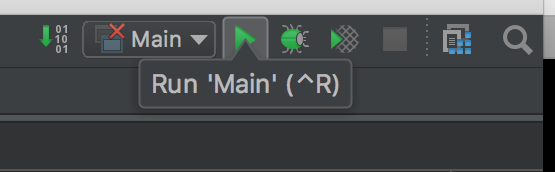Unfortunately, this will fail with a runtime error stating that it can't find the class called
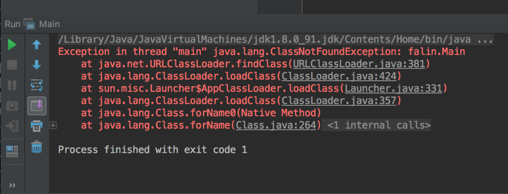Main. Since we renamed the class that has ourmain()method, we need to tell the IDE which class it should look in.To do so, click on the Select Configuration button in the top, right-hand corner of the screen, just to the left of the Run button.
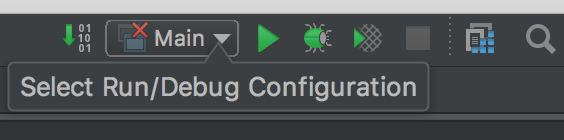In the menu that appears, select "Edit Configurations...".
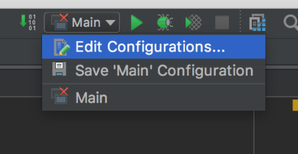You'll see a window appear that contains settings for how to run our program. The setting we're interested in is the one for the Main class.
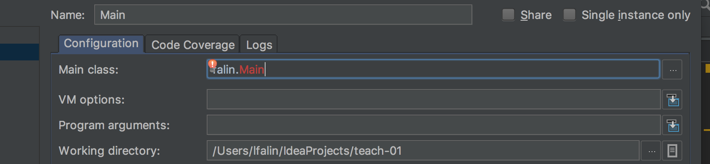Change the part in red that says
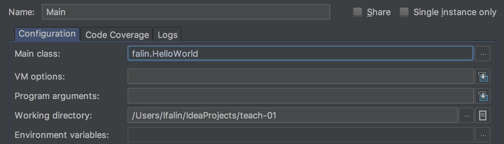MaintoHelloWorldto match the name of the class with themain()function in it. Then click "OK". -
Now click the Run button again, and if all goes well, you should see the text "Hello World" displayed in the output console at the bottom of the window.
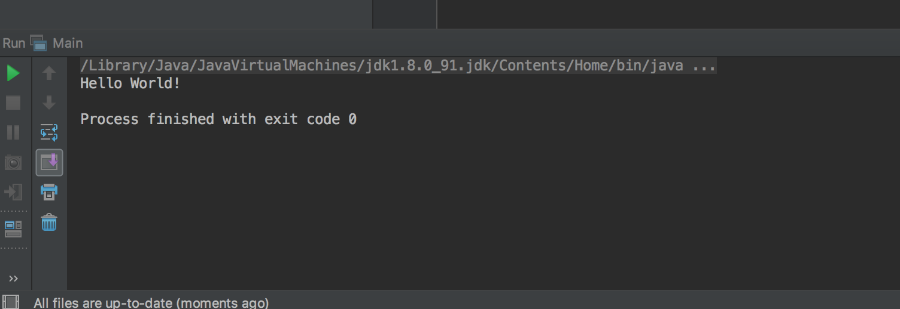
Once you've finished, or if you get stuck, compare your code to the teacher's solution.
🌟Stretch Challenge🌟
Now that you can write simple Java programs, it's time to make something useful. Write a program that asks the user for the radius of a circle, then have it print the area and circumference rounded to two decimal places.
-
Before you begin, you should read the following:
-
Create a public class called
CircleCalculatorand save it in a .java file with the same name. -
Add a function to the class called
getRadius()that gets the radius from the user as a float. -
Add a function to the class called
displayCircumference()that takes the radius as a parameter, calculates the circumference, and displays it to two decimal places. -
Add a function to the class called
displayArea()that takes the radius as a parameter, calculates the circumference, and displays it to two decimal places. -
As before, have
main()create an instance of the class. Then call the instance'sgetRadius(),displayCircumference(), anddisplayArea()methods.
Congratulations! You now know how to write, compile, and run basic Java programs.
Make sure everyone on your team understands and receives a copy of this code.
Once again, compare your answer to the teacher's solution, then complete the accompanying quiz for this assignment on I-Learn.